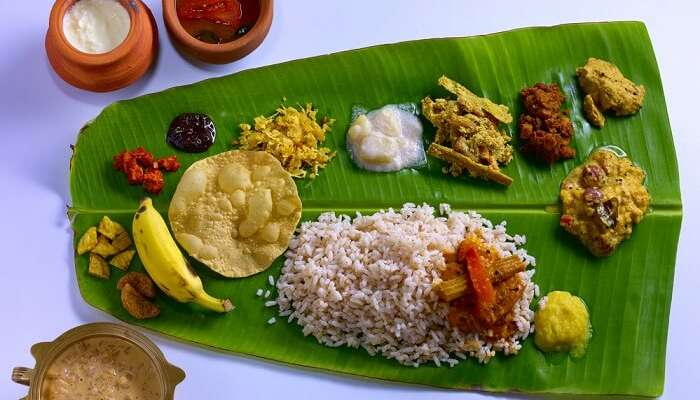
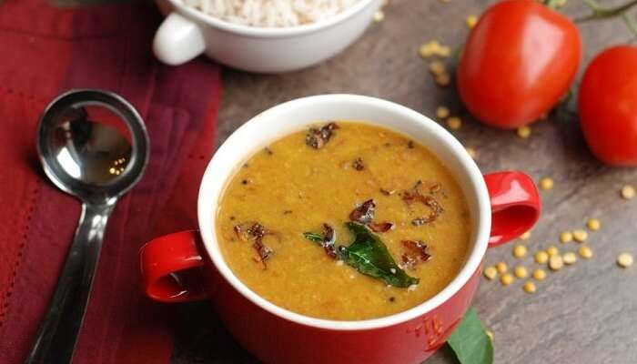

Ela Sadya
Ela Sadya is one of the finest meals which is incorporated in traditional Kerala dishes whose aroma will water your mouth. Ela Sadya is the king of all Kerala food items!

Parippu Curry
it is actually one of the most delicious of Kerala food items. The Dal Curry served in Kerala is made from small gram and ghee with a considerable amount of spices and chillies.

Ghee Roast With Sambar
Food connects us all and if you are looking to have the best food in Kerala then do try dosa Ghee roast with Kerala style Sambhar which will blast your mouth with awesome flavours.